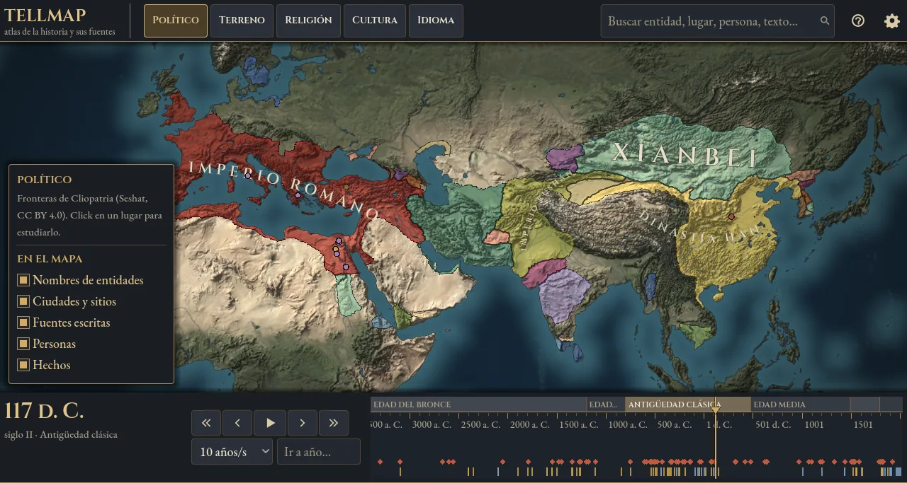
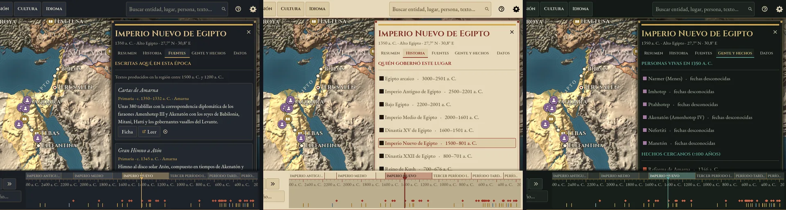

La historia del mundo
en un mapa vivo
Mové la línea de tiempo y mirá cómo se corren las fronteras, nacen las ciudades y aparecen los textos que se escribieron en cada lugar, de 3400 a. C. a hoy.

Una biblioteca ordenada en el espacio y el tiempo
Cada texto tiene dos coordenadas: dónde y cuándo se escribió, y de qué lugar y época trata. Si vas a Egipto en 1350 a. C., encontrás el Gran Himno a Atón, escrito en Amarna en ese momento, junto a Heródoto, que lo contó novecientos años después, y a los egiptólogos que lo estudiaron.
- Fuentes primarias: lo escrito ahí y entonces, con el enlace al texto completo cuando está en dominio público.
- Estudios: lo que se escribió después sobre ese lugar y esa época.
- Personas: pensadores, gobernantes y autores que aparecen mientras viven.
- Hechos: batallas, fundaciones y tratados que destellan en su fecha.

Lo que lo hace distinto
Hecho para estudiar historia al revés: empezando por el mapa y por las fuentes.
Fronteras con respaldo
Las fronteras de 1637 entidades políticas, año por año, desde Cliopatria (Seshat Global History Databank): 13 400 registros revisados por historiadores.
Fuentes primero
Cada ficha distingue fuentes primarias de estudios, dice qué tan segura es su fecha y lleva al texto completo cuando se puede.
Nada inventado
Las cifras antiguas son estimaciones publicadas, con su autor y su incertidumbre. Lo que no se sabe, se dice.
La estética de los grandes mapas
Relieve sombreado, ríos, costas de carta náutica y nombres que se curvan sobre el territorio, con tres temas y cuatro niveles de calidad.
Tres temas, el mismo mundo
Mármol y bronce, Pergamino iluminado, y Tinta y latón. Cuatro niveles de calidad gráfica, para que ande bien desde una notebook vieja hasta una computadora de juegos.

Cómo se hace
Software libre (AGPL-3.0) hecho con Godot, sobre datos abiertos. La enciclopedia crece de a poco, en paquetes que cualquiera puede leer y revisar, con Wikipedia, Wikidata e IA que siempre cita sus fuentes y pasa por revisión humana.
En qué va
Está en desarrollo y se construye a la vista: cada paso tiene su tarea en GitHub.